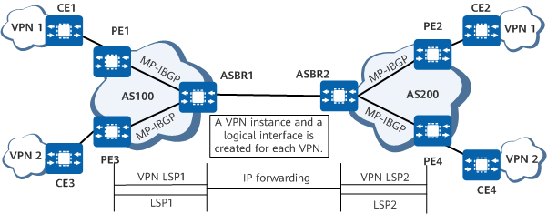
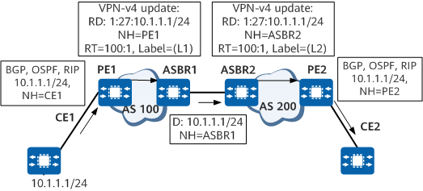

Inter-AS VPN Option A Overview
As a basic IPv4 L3VPN application in the inter-AS scenario, Option A does not need special configurations and MPLS does not need to run between ASBRs. In this mode, ASBRs of two ASs directly connect to each other and function as PEs in the ASs. Each ASBR views the peer ASBR as its CE, creates a VPN instance for each VPN, and advertises IPv4 routes to the peer ASBR through EBGP.
On the network shown in Figure 1, ASBR1 in AS 100 views ASBR2 in AS 200 as a CE. Similarly, ASBR2 also views ASBR1 as a CE. Here, a VPN LSP indicates a private network tunnel, and an LSP indicates a public network tunnel.
Figure 1 Inter-AS VPN Option A networking
Route Advertisement in an Inter-AS VPN Option A Scenario
MP-IBGP runs between PEs and ASBRs to exchange VPN-IPv4 route information. A common PE-CE routing protocol (BGP or IGP multi-instance) or static route can be used between ASBRs for the exchange of VPN information. Because this involves interaction between different ASs, using EBGP is recommended.
For example, CE1 advertises route 10.1.1.1/24 to CE2.
Figure 2 shows the process. D indicates the destination address, NH the next hop, and L1 and L2 the VPN labels. This figure does not show the distribution of public network IGP routes and labels.
Figure 2 Route advertisement in an inter-AS VPN Option A scenario
The specific process is as follows:
- CE1 uses BGP, OSPF, or RIP to advertise the route to PE1 in AS 100.
- PE1 in AS 100 uses MP-IBGP to advertise the labeled VPNv4 route to ASBR1 in AS 100.
- After ASBR1 receives the VPNv4 route, if an export VPN target of the route matches an import VPN target configured for the local VPN instance, ASBR1 adds the route to the VPN routing table, saves the VPN label carried in the route, and advertises the unicast route to ASBR2 through the VPN instance peer relationship.
- ASBR2 converts the received unicast route into a VPNv4 route and uses MP-IBGP to advertise the route to PE2 in AS 200.
- PE2 in AS 200 uses BGP, OSPF, or RIP to advertise the route to CE2.